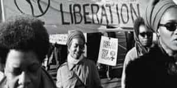

< < < Back
5 Reasons Why Black Feminism Is A Failure – Return Of Kings
Although it’s been around for the better part of a half century, black feminism has made something of a resurgence over the past few years. Among it’s “brightest” sparks are Feminista Jones, Brittney “Professor Crunk” Cooper, Mikki Kendall, Kimberly Foster and Jamila Lemieux.
Much of what they do is largely a knockoff of what white feminists yammer on about—“rape culture,” “street harassment,” and of late, taking digs at prominent black men like Bill Cosby. While they don’t get anywhere near the shine and attention their white sisters do, they nevertheless have managed to make a consistent nuisance of themselves, especially for those of us in black America who are are in closest spatial proximity to them.
I have long argued that black feminism, as it has been known historically and in the present day, has been a rank and utter failure, because by its own stated goals and it’s biggest personalities, it has proven itself unable to deliver the goods.
Let’s count the ways, shall we?
1. It Has Not Passed Any Laws That Have Directly Or Indirectly Helped Black Women
ALL of the freedoms, rights and privileges black women enjoy today—affirmative action “twofers” (being minority and being a female), increased public safety (forcible rape and sexual assault in black precincts at all-time lows), access to birth control and abortion (black women get the most abortions among American women in general), lessened social stigma for being baby mamas (more than 70% of all black babies are born out of wedlock), access to college educations, you name it—have come from white feminists.
Roe v. Wade, the pill, the Sexual Revolution, Norma Rae, all of that came about from white feminists. Black feminists haven’t had a direct hand in crafting any laws, lobbying for the same, or even raising any important issues that would directly assist black women in their lives.
2. It Has Not Helped To Improve The Lives Of Black Women
Quick, name ONE area where today’s average, rank and file back woman has been directly, or even indirectly, improved as a result of black feminism? Black women have the lowest marital rate, the highest divorce rate, the highest obesity rate, the highest rate of STD infection, and, of course, the highest out of wedlock birthrate. How is any of this a boon to today’s Black woman? In fact, if anything…
3. It Has Made Black Women’s Lives Markedly Worse

Black feminists advocate for antisocial behaviors, like arguing the “merits” of being ratchet, being a ho, slut and so forth, while simultaneously denigrating what they call the “politics of respectability” that made black America successful in the past.
Furthermore, black feminists also openly argue for the dismantling of nuclear families, under some ridiculous rubric of “patriarchy” in the Black community, and is among the leaders of kicking dirt on the black man. As a result, more black women are encouraged to be bottom feeders behaviorally.
4. It Fosters Diva Culture
I’ve written about this elsewhere, but briefly speaking, black feminism aids and abets the notion among many black women that they are “divas”—basically insufferable human beings who think they are “all that,” when in reality they’re mediocrities with huge egos.
5. It Is A Haven For Unattractive And Mentally Unstable Black Women
This is something that needs to be shouted from the rafters and put on blast. These people have massive amounts of time on their hands to get their message out, and have done formidable damage to the black precincts across the country, infecting the minds of many black women that it is perfectly OK to let yourself go, attempt to guilt or shame men into dealing with you, and have erratic mood swings that include violence.
They do this all in the name of challenging the so-called “patriarchy.” It’s a cruel joke that the rejects and defectives of black America have successfully foisted onto the rest of us.
In Summation
Black feminism has shown itself to be divisive and counterproductive, as well as highly ineffective in assisting black women with meeting the very goals it claims to be about. Indeed, its biggest names have shown themselves to be unable to achieve these goals.
Black feminism means nothing good—only more acrimony between black men and women, not to mention pain, illness, disease, violence, and death. And it must stop.
 If you like this article and are concerned about the future of the Western world, check out Roosh's book Free Speech Isn't Free. It gives an inside look to how the globalist establishment is attempting to marginalize masculine men with a leftist agenda that promotes censorship, feminism, and sterility. It also shares key knowledge and tools that you can use to defend yourself against social justice attacks. Click here to learn more about the book. Your support will help maintain our operation.
If you like this article and are concerned about the future of the Western world, check out Roosh's book Free Speech Isn't Free. It gives an inside look to how the globalist establishment is attempting to marginalize masculine men with a leftist agenda that promotes censorship, feminism, and sterility. It also shares key knowledge and tools that you can use to defend yourself against social justice attacks. Click here to learn more about the book. Your support will help maintain our operation.
Read More: The 9 Ugliest Feminists In America


{kind=link}
{kind=link}
{kind=link}
{kind=link}
{kind=link}
{kind=link}